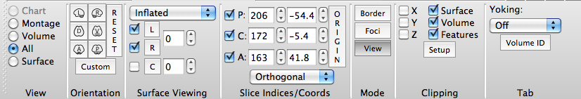

All View
All View displays the left and right hemisphere surfaces (and
cerebellum if loaded) and all 3 volume planes in one Viewing
Tab. In All View the Toolbar looks like this:

- Orientation contains buttons to
set orthogonal and User-defined views of the brain
surfaces/volume displayed.
- Orthogonal view buttons are labeled: L
(left), R (right), D (dorsal), V
(ventral), A (anterior), and P
(posterior).
- The Reset button resets the
orientation/zoom to the default.
- Custom Orientation allows
one to set and save (or not) a specific transform (pan,
rotate, oblique rotate, zoom) for a surface or volume.
- Surface Viewing contains
pull-downs and checkboxes to set the surfaces to view: L
(left hemisphere), R (right hemisphere), C
(cerebellum). The boxes to the right control the spacing
between left and right hemispheres (relative to anatomical
spacing = 0) and the spacing of the cerebellum away from the
cortex.
- Slice Indices/Coords
contains toggles to turn off/on volume planes (P =
parasagittal, C = coronal, A = axial) and
settings for the slice index and stereotaxic (Talairach)
coordinate to be viewed. The vertical Origin
button rests the slice indices to the default (centered at the
AC). The pull-down at the bottom toggles between Orthogonal
and Oblique volume viewing.
- Mode contains buttons for
switching between Viewing Area mouse controls
for performing actions including Border
drawing and Foci creation
or typical View mode.
- Clipping contains settings
for cutting down Surface, Volume, or Features data to be
viewed.
- Tab contains cross-tab
functions for yoking the display of two or more Viewing Tabs
and the Volume ID button that turns on movement of the
volume slice/crosshairs displayed to the same plane as the
brainordinate selected in any of the non-Chart view
tabs.